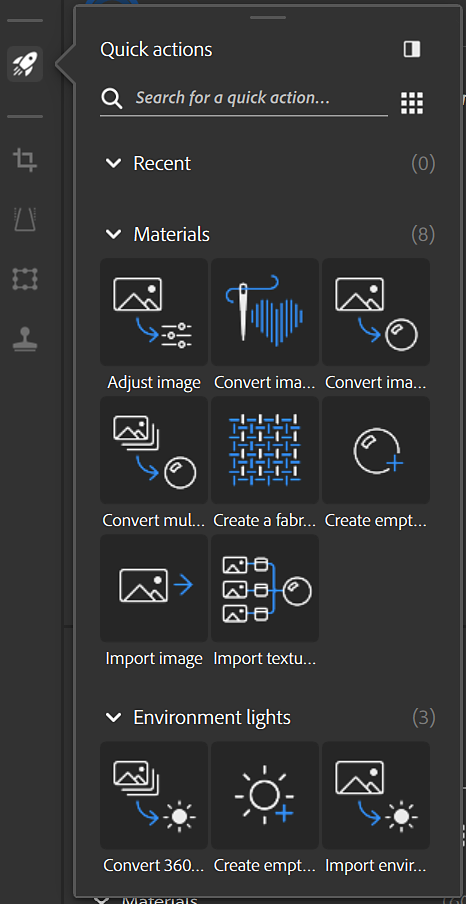

Quick actions is a system that allows to create an asset or add many layers in the stack in few clicks. Use Quick actions to create an asset, create a project, or to add the layers you need to your existing stack.
From the quick action panel click on a Quick action to add it to the stack or create a new asset depending on the Quick action type.
Options:
Learn more about Quick actions here.